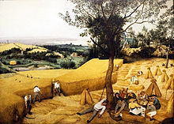
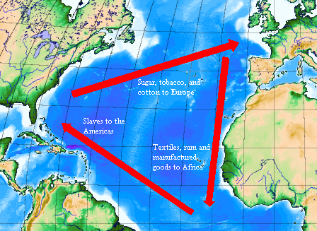

“The greatest improvement in the productive powers of labour, and the greater part of the skill, dexterity, and judgment with which it is any where directed, or applied, seem to have been the effects of the division of labour.”
4 Why Does the Division of Labour Increase Productivity?
Three reasons:
Continual practice of one job increases skill
Cuts lost time switching between jobs
Focus on one task leads to innovation at that task
A sushi chef specializes in just the preparation of raw fish, allowing him to become expert at that task.
5 I.2 The Principle which gives Rise to the Division of Labour
“This division of labour, from which so many advantages are derived, is not originally the effect of any human wisdom, which foresees and intends that general opulence to which it gives occasion. It is the necessary, though very slow and gradual, consequence of a certain propensity in human nature which has in view no such extensive utility; the propensity to truck, barter, and exchange one thing for another.”
“Give me that which I want, and you shall have this which you want, is the meaning of every such offer; and it is in this manner that we obtain from one another the far greater part of those good offices which we stand in need of. It is not from the benevolence of the butcher, the brewer, or the baker, that we expect our dinner, but from their regard to their own interest. We address ourselves, not to their humanity but to their self-love, and never talk to them of our own necessities but of their advantages.”
7 I.3 The Division of Labour is Limited by the Extent of the Market
“As it is the power of exchanging that gives occasion to the division of labour, so the extent of this division must always be limited by the extent of that power, or, in other words, by the extent of the market. When the market is very small, no person can have any encouragement to dedicate himself entirely to one employment, for want of the power to exchange all that surplus part of the produce of his own labour, which is over and above his own consumption, for such parts of the produce of other men's labour as he has occasion for.”
When most of our needs come from exchange, we have commercial society
But original commercial society is often “clogged and embarrassed” – mutual coincidence of wants.
Why metals are used.
9 I.5. Of the Real and Nominal Price of Commodities, or of their Price in Labour, and their Price in Money
“Every man is rich or poor according to the degree in which he can afford to enjoy the necessaries, conveniencies, and amusements of human life. But after the division of labour has once thoroughly taken place, it is but a very small part of these with which a man's own labour can supply him. The far greater part of them he must derive from the labour of other people, and he must be rich or poor according to the quantity of that labour which he can command, or which he can afford to purchase.”
10 I.6. Of the Component Parts of the Price of Commodities
“In that early and rude state of society which precedes both the accumulation of stock and the appropriation of land, the proportion between the quantities of labour necessary for acquiring different objects seems to be the only circumstance which can afford any rule for exchanging them for one another. If among a nation of hunters, for example, it usually costs twice the labour to kill a beaver which it does to kill a deer, one beaver should naturally exchange for or be worth two deer. It is natural that what is usually the produce of two days or two hours labour, should be worth double of what is usually the produce of one day's or one hour's labour.”
The indifference curve touches the production possibilities frontier where two deer trade for one beaver. (10 deer for 5 beaver.)
▬ Deer-Beaver: PPF▬ Deer-Beaver: Indiff
12 I.7. Of the Natural and Market Price of Commodities
“When the price of any commodity is neither more nor less than what is sufficient to pay the rent of the land, the wages of the labour, and the profits of the stock employed in raising, preparing, and bringing it to market, according to their natural rates, the commodity is then sold for what may be called its natural price.”
“But this original state of things, in which the labourer enjoyed the whole produce of his own labour, could not last beyond the first introduction of the appropriation of land and the accumulation of stock.”
“The increase of stock, which raises wages, tends to lower profit. When the stocks of many rich merchants are turned into the same trade, their mutual competition naturally tends to lower its profit; and when there is a like increase of stock in all the different trades carried on in the same society, the same competition must produce the same effect in them all.”
15 I.10. Of Wages and Profit in the Different Employments of Labour and Stock
“The whole of the advantages and disadvantages of the different employments of labour and stock must, in the same neighbourhood, be either perfectly equal or continually tending to equality. If in the same neighbourhood, there was any employment evidently either more or less advantageous than the rest, so many people would crowd into it in the one case, and so many would desert it in the other, that its advantages would soon return to the level of other employments.”
“Rent, considered as the price paid for the use of land, is naturally the highest which the tenant can afford to pay in the actual circumstances of the land… This portion, however, may still be considered as the natural rent of land, or the rent for which it is naturally meant that land should for the most part be let.”

17 Book II: Of the Nature, Accumulation, and Employment of Stock
“There are two different ways in which a capital may be employed so as to yield a revenue or profit to its employer.
“First, it may be employed in raising, manufacturing, or purchasing goods, and selling them again with a profit. The capital employed in this manner yields no revenue or profit to its employer, while it either remains in his possession, or continues in the same shape. The goods of the merchant yield him no revenue or profit till he sells them for money, and the money yields him as little till it is again exchanged for goods. His capital is continually going from him in one shape, and returning to him in another... Such capitals, therefore, may very properly be called circulating capitals.
“Secondly, it may be employed in the improvement of land, in the purchase of useful machines and instruments of trade, or in suchlike things as yield a revenue or profit without changing masters, or circulating any further. Such capitals, therefore, may very properly be called fixed capitals.”
19 II.2. Of Money Considered as a particular Branch of the General Stock of the Society...
20 II.3. Of the Accumulation of Capital, or of Productive and Unproductive Labour
“In some countries the interest of money has been prohibited by law. But as something can every-where be made by the use of money, something ought every-where to be paid for the use of it. This regulation, instead of preventing, has been found from experience to increase the evil of usury; the debtor being obliged to pay, not only for the use of the money, but for the risk which his creditor runs by accepting a compensation for that use. He is obliged, if one may say so, to insure his creditor from the penalties of usury.”
“A capital may be employed in four different ways: either, first, in procuring the rude produce annually required for the use and consumption of the society; or, secondly, in manufacturing and preparing that rude produce for immediate use and consumption; or, thirdly, in transporting either the rude or manufactured produce from the places where they abound to those where they are wanted; or, lastly, in dividing particular portions of either into such small parcels as suit the occasional demands of those who want them. In the first way are employed the capitals of all those who undertake the improvement or cultivation of lands, mines, or fisheries; in the second, those of all master manufacturers; in the third, those of all wholesale merchants; and in the fourth, those of all retailers.”
“Each of these four methods of employing a capital is essentially necessary either to the existence or extension of the other three, or to the general conveniency of the society.
“Unless a capital was employed in furnishing rude produce to a certain degree of abundance, neither manufactures nor trade of any kind could exist.
“Unless a capital was employed in manufacturing that part of the rude produce which requires a good deal of preparation before it can be fit for use and consumption, it either would never be produced, because there could be no demand for it; or if it was produced spontaneously, it would be of no value in exchange, and could add nothing to the wealth of the society.
“Unless a capital was employed in transporting either the rude or manufactured produce from the places where it abounds to those where it is wanted, no more of either could be produced than was necessary for the consumption of the neighbourhood. The capital of the merchant exchanges the surplus produce of one place for that of another, and thus encourages the industry and increases the enjoyments of both.
“Unless a capital was employed in breaking and dividing certain portions either of the rude or manufactured produce into such small parcels as suit the occasional demands of those who want them, every man would be obliged to purchase a greater quantity of the goods he wanted than his immediate occasions required. If there was no such trade as a butcher, for example, every man would be obliged to purchase a whole ox or a whole sheep at a time.”
24 Book III: Of the different Progress of Opulence in different Nations
Smith believes that the natural order of economic development is:
Agriculture is advanced so long as there is uncultivated land in the area.
“We must not, however, upon this account, imagine that the gain of the town is the loss of the country. The gains of both are mutual and reciprocal, and the division of labour is in this, as in all other cases, advantageous to all the different persons employed in the various occupations into which it is subdivided. The inhabitants of the country purchase of the town a greater quantity of manufactured goods, with the produce of a much smaller quantity of their own labour, than they must have employed had they attempted to prepare them themselves.”
26 III.2. Of the Discouragement of Agriculture after the Fall of the Roman Empire
27 III.3. Of the Rise and Progress of Cities and Towns, after the Fall of the Roman Empire
28 III.4. How the Commerce of the Towns Contributed to the Country
“The increase and riches of commercial and manufacturing towns contributed to the improvement and cultivation of the countries to which they belonged in three different ways.
“First, by affording a great and ready market for the rude produce of the country, they gave encouragement to its cultivation and further improvement.
“Secondly, the wealth acquired by the inhabitants of cities was frequently employed in purchasing such lands as were to be sold, of which a great part would frequently be uncultivated.
“Thirdly, and lastly, commerce and manufactures gradually introduced order and good government, and with them, the liberty and security of individuals, among the inhabitants of the country…”
30 IV.1. Of the Principle of the Commercial or Mercantile System
“A rich country, in the same manner as a rich man, is supposed to be a country abounding in money; and to heap up gold and saver in any country is supposed to be the readiest way to enrich it.”

31 IV.2 Of Restraints upon the Importation from Foreign Countries of such Goods as can be Produced at Home
“By preferring the support of domestic to that of foreign industry, he intends only his own security; and by directing that industry in such a manner as its produce may be of the greatest value, he intends only his own gain, and he is in this, as in many other cases, led by an invisible hand to promote an end which was no part of his intention. Nor is it always the worse for the society that it was no part of it. By pursuing his own interest he frequently promotes that of the society more effectually than when he really intends to promote it.”
“That this monopoly of the home-market frequently gives great encouragement to that particular species of industry which enjoys it, and frequently turns towards that employment a greater share of both the labour and stock of the society than would otherwise have gone to it, cannot be doubted. But whether it tends either to increase the general industry of the society, or to give it the most advantageous direction, is not, perhaps, altogether so evident.”
33 IV.3. Of the extraordinary Restraints upon the Importation of Goods of almost all Kinds, from those Countries with which the Balance is supposed to be Disadvantageous
“Folly and injustice seem to have been the principles which presided over and directed the first project of establishing those colonies; the folly of hunting after gold and silver mines, and the injustice of coveting the possession of a country whose harmless natives, far from having ever injured the people of Europe, had received the first adventurers with every mark of kindness and hospitality.”
“It cannot be very difficult to determine who have been the contrivers of this whole mercantile system; not the consumers, we may believe, whose interest has been entirely neglected; but the producers, whose interest has been so carefully attended to; and among this latter class our merchants and manufacturers have been by far the principal architects.”
39 IV.9. Of the Agricultural Systems, or of those Systems of Political Œconomy, which Represent the Produce of Land, as either the Sole or the Principal, Source of the Revenue and Wealth of Every Country
40 Book V: Of the Revenue of the Sovereign or Commonwealth